15 Diálogo e Interatividade
15.1 Introdução: Dialogando
“O diálogo é uma exigência existencial”. Assim se referiu Freire (1989) a uma atividade que, de modo geral, é feita com naturalidade e desenvoltura pelos seres humanos: conversar. De fato, boa parte das relações humanas são intermediadas por alguma forma de diálogo: aprendizagem escolar, entrevista de emprego, negociações, cultivo de relacionamentos afetivos, psicoterapia, debates acadêmicos e políticos etc. É algo tão habitual que, enquanto mantemos o propósito principal da interação em foco, os fenômenos dialógicos em si passam até despercebidos. Todavia, basta haver algum impedimento à fluência típica de uma conversa (patologias que afetam a fala, interlocutores desatentos, um ruído alto, uma frase mal formulada) para nos atentarmos mais aos detalhes de como se dá essa forma tão fundamental de comunicação humana.
Conversar é pôr em uso a linguagem natural em um contexto, para algum fim, em uma atividade que exige muita coordenação, agilidade e planejamento. Diálogos podem ocorrer entre dois ou mais participantes e, embora a forma oral seja mais autêntica e convencional na existência humana, o diálogo através de mensagens de texto instantâneas permeia também o cotidiano em diversos grupos sociais da atualidade. Muitas dimensões podem variar em uma conversa, como espontaneidade, formalidade, sinceridade e naturalidade, além de ela estar sujeita a influências sociolinguísticas, de estruturas de poder, de adequação ao ambiente e de pressuposições (Abbott, 2008; Boxer, 2002; Danescu-Niculescu-Mizil et al., 2012; Prabhakaran; Rambow, 2013). Todos nossos microatos durante uma conversa podem carregar significado, inclusive os silêncios, o olhar, as expressões faciais, os gestos, as hesitações e o tom da fala.
Vamos inspecionar brevemente o exemplo na Figura 15.1, o qual contém uma transcrição de duas pessoas dialogando1. Podemos observar algumas peculiaridades: há diversas pausas, frases que não seguem formas idealizadas de sintaxe (é os avós), ou que são interrompidas (“achei uma” dá lugar a “adorei”), sinais de compreensão (hum hum) e sobreposição (a palavra “nunca” de MRN ocorre junto com a de HLS no áudio) e uma clarificação (“meus pais não / mas meus avós”). Já podemos perceber que a fala-em-interação (e sua transcrição) diverge bastante da forma canônica dos textos em grandes corpora, extraídos de livros ou de matérias de jornais, os quais geralmente foram bem lapidados por processo de edição.
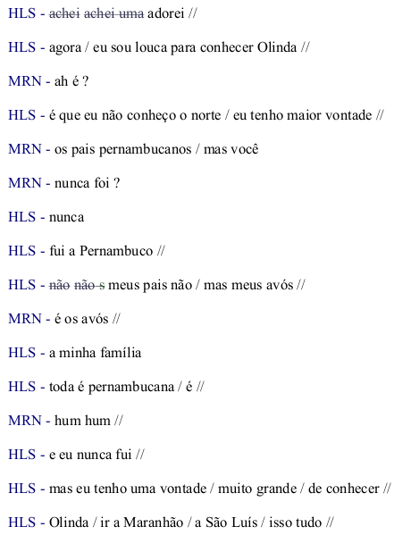
Fonte: CRPC, arquivo Arte_Urbana
Antes de prosseguir com a leitura, sugerimos um outro pequeno exercício. Procure um vídeo em que haja pessoas em uma conversa espontânea, como amigas e amigos em uma festa ou um debate livre (isto é, evite trechos de seriados, filmes ou gravações com falas planejadas). Se lhe for possível, assista primeiro sem som. Preste atenção nos olhares, gestos e expressões faciais. Depois, assista-o novamente, agora focando na forma com que as pessoas conversam, sem se ater tanto ao conteúdo. Tome nota do que você percebe, por exemplo: Como elas decidem quem vai falar? Como elas corrigem seus próprios erros ou os erros da interlocutora ou do interlocutor? Quando ocorrem pausas? As frases são todas bem formuladas? Que estratégias os participantes usam para demonstrar e resolver pontos que não ficaram claros? Que efeitos parecem ter os olhares? Que tipos de gestos e expressões são feitos? Como elas se referem ao ambiente em que estão ou a pessoas, lugares ou objetos distantes?2
Sendo um fenômeno tão multifacetado, imbuído de tantas características de vasta complexidade, é evidente que criar modelos computacionais que capturem todas as nuances do diálogo é extremamente desafiador (e, ousamos dizer, impossível com a tecnologia atual). Mesmo os agentes conversacionais comerciais que impressionam pelas aparentes habilidades de manipulação da linguagem ainda estão longe de modelar diálogo por completo. Por exemplo, na forma usual de conversação de chatbots, há uma alternância forçada de turnos (eu escrevo, você escreve, eu escrevo, você escreve e assim sucessivamente) que não se assemelha à conversa espontânea entre humanos. Embora seja possível uma conversa dessa forma, ela não é tão natural e rica em fenômenos (compare-a com interações em grupos agitados do WhatsApp, por exemplo: como um chatbot se sairia nesse contexto?). É também comum assistentes conversacionais se confundirem em várias situações, como quando há ambiguidade ou uma correção (uma rápida busca por vídeos na internet traz diversos exemplos reais), e há pesquisa investigando limitações de seu uso no contexto brasileiro (Guerino; Valentim, 2020).
Neste capítulo, apresentaremos um panorama geral de conceitos e fenômenos do diálogo (Seções Conceitos: O que forma um diálogo? e Fenômenos: O que ocorre em uma conversa?), bem como de tipos de modelos e tarefas (Seção Modelos e Tarefas: Implementando um processo complexo), tanto os mais clássicos quanto os que se enquadram no atual paradigma de técnicas de aprendizado de máquina. Discutiremos os desafios de se avaliar modelos de diálogo, ressaltando que não basta otimizar uma métrica de performance para se ter um resultado satisfatório (Seção Avaliação: Verificando a qualidade de um sistema). Trataremos, ainda, de recursos, incluindo corpora existentes para o português e, mais amplamente, das diversas formas de coleta de dados interativos, que difere da coleta de textos em monólogo comumente usados para treinar modelos de PLN baseados em dados (Seção Recursos: Trabalhando com dados e sistemas interativos). Para concluir, discorreremos sobre algumas questões imperativas quanto ao desenvolvimento e ao uso responsável desses modelos, frisando a importância da preservação, em vez da banalização ou corrosão, dessa atividade humana construída socialmente ao longo da nossa evolução e que é tão valiosa para nossa existência.
15.2 Conceitos: O que forma um diálogo?
O que é diálogo? Pense, por alguns instantes, em uma definição. Nesta seção, buscaremos delinear esse fenômeno, trazendo à tona algumas de suas atribuições e alguns de seus ingredientes. Compreender as particularidades e circunstâncias do que é diálogo é essencial para definirmos e avaliarmos modelos capazes de tomar parte em conversas com humanos. Isso nos possibilita dar o devido valor ao objeto de estudo, indo além da técnica em si.
Iniciemos pela palavra “diálogo”, que vem do grego, sendo composta pelo prefixo “dia”, que significa “através”, e “logos” que quer dizer “palavra” ou “discurso”3. Há muitas atividades que podemos realizar através do discurso. Intuitivamente, sabemos que, em um diálogo, há dois ou mais participantes que se revezam em proferir falas (ou sinais)4, e, em geral, enquanto uma pessoa fala a outra está em silêncio, supostamente prestando atenção no que está sendo dito (ou gesticulado)5.
Vamos caracterizar melhor como esse uso colaborativo da linguagem ocorre. Diversas fontes consideram a conversação face a face como uso primário da linguagem humana, do qual outras formas derivam (ver Tabela 1.1 em (Bavelas, 2022)). É uma premissa razoável, visto que, como aponta Clark (1996a), a escrita e os aparatos tecnológicos (telefone, rádio etc.) não estão disponíveis em todas as sociedades humanas, enquanto a conversa é universal, além de ser a forma básica de aquisição de linguagem (Clark, 2020; Clark, 2014). Comecemos, portanto, com um formato elementar: duas pessoas estão conversando, através da voz, no mesmo ambiente que ambas podem ver. Em (Clark, 1996a), encontramos dez características dessa forma de interação:
co-presença: ambos os participantes estão inseridos no mesmo ambiente físico no momento da conversa;
visibilidade: ambos os participantes podem se ver;
audibilidade: ambos os participantes podem se ouvir;
instantaneidade: a percepção das ações do outro ocorre sem um atraso perceptível;
evanescência: o meio (e.g. as ondas sonoras) se dissipa rapidamente;
ausência de registro: as ações dos participantes não deixam rastro;
simultaneidade: os participantes podem produzir e receber as falas de imediato e simultaneamente;
extemporaneidade: as ações são formuladas e executadas em tempo real;
autodeterminação: os participantes decidem por si próprios que ações fazer e quando fazê-las;
autoexpressão: os participantes agem conforme si mesmos (isto é, não representam um papel).
A partir dessas características, conseguimos classificar melhor as várias formas de diálogo. Todavia, a proposta não é atribuir um valor de superioridade sobre essa forma em relação às demais. Interações que não atendem a todos os requisitos também podem ser diálogos, e são igualmente válidas. Por exemplo, conversas telefônicas não exibem as características de co-presença e visibilidade, e, se são gravadas, elas deixam registro. Em conversas por língua de sinais, audibilidade não precisa estar presente, enquanto pessoas com limitações de visão podem igualmente conversar. Mas a ausência de certas características pode vir a ser um critério excludente na hora de definir diálogo. Uma conversa por cartas em que as pessoas estão simulando ser celebridades não atende a nenhuma dessas características. Isso seria um diálogo? E uma peça de teatro, em que as falas não são espontâneas? Do ponto de vista teórico, provavelmente não. Porém é difícil chegar a uma definição categórica e definitiva, de modo que, na prática, a delimitação vai depender diretamente do uso específico da tecnologia.
Podemos, ainda, pensar em gradações para o nível de interatividade de uma conversa (Schlangen, 2023c). Uma conversa entre familiares próximos pode ser bem espontânea, com cada interlocutor se expressando livremente, como, quando e o quanto quer. Já em uma entrevista, há uma assimetria evidente de papéis, onde uma pessoa majoritariamente faz perguntas e a outra responde. Ambientes institucionais, como um julgamento, têm regras pré-estabelecidas de quem pode tomar a palavra e em quais momentos. O número de participantes também afeta algumas características. Quando há mais participantes, tomar a palavra pode se tornar mais competitivo, além de não ser possível focar visualmente em todos ao mesmo tempo.
O que mais é relevante quando pessoas estão conversando? Clark (1996a) salienta que um diálogo é uma ação conjunta entre os participantes, que precisam coordenar suas ações em busca de um propósito. A ação mais evidente é a fala (o que falar, quando falar e quando não falar) junto com seu processamento (entender o que está sendo falado e que rumo a conversa vai tomando a cada passo). Na fala, todas as dimensões linguísticas discutidas nos demais capítulos deste livro têm um papel, desde fonética, prosódia e entonação, até sintaxe, semântica, análise do discurso e pragmática. Em especial, a pragmática é extremamente relevante no diálogo, pois a conversa está ocorrendo em um contexto, que inclui a situação como um todo, o discurso, o ambiente físico e a bagagem de conhecimento de cada um.
Há muitos motivos que cotidianamente exigem essa ação conjunta como narrar um fato, explicar um assunto, tomar decisões e confidenciar emoções. Mesmo em interações em que os papéis são assimétricos (por exemplo, médica e paciente), a cooperação existe: enquanto está ouvindo a contribuição narrativa das queixas do paciente, a médica não interfere muito mas pode demonstrar que algo não ficou claro com sua expressão facial, interromper para pedir esclarecimentos, ou ajudar o paciente a se lembrar de uma palavra que lhe foge.
No contexto de PLN, também devemos levar em conta o que acontece quando pelo menos um dos participantes da conversa é um agente artificial, seja incorporado em um robô físico, um avatar virtual ou apenas uma voz em um aparato imóvel. A atitude das pessoas muda conforme o interlocutor e o ambiente (Giles, 2016); por exemplo, não falamos da mesma maneira com uma criança em casa e com uma juíza em tribunal. Diferentes expectativas e adaptações também podem ser desencadeadas quando o interlocutor é um programa de computador (Bernsen et al., 1996; Mol et al., 2009; Vinciarelli et al., 2015). Estudar os fenômenos do diálogo entre humanos é uma fonte valiosa de informações, mas não é suficiente para desenvolver aplicações. É preciso buscar entender como a interação humano-máquina de fato ocorre. Hayes (1980) argumenta, inclusive, que a meta de criar agentes que busquem imitar o comportamento humano sequer é um ideal, dada a capacidade de adaptação dos humanos ao interlocutor. Em vez disso, ele propõe que os modelos exibam habilidades que permitam uma “interação graciosa” com os humanos, que seja robusta a problemas de comunicação (Hayes; Reddy, 1983).
Munidas e munidos, agora, de uma compreensão mais abrangente do que é (ou pode ser) um diálogo, temos de nos debruçar sobre alguns dos fenômenos linguísticos que ocorrem quando pessoas conversam, já que a (im)possibilidade de processar esses fenômenos e de usar estratégias similares ou equivalentes pode afetar a performance de agentes conversacionais e nossa percepção deles.
15.3 Fenômenos: O que ocorre em uma conversa?
Vamos agora examinar uma série de conceitos relativos a alguns dos principais fenômenos que ocorrem em diálogos. São manifestações e estratégias que muitas pessoas conseguem usar e compreender intuitivamente com maestria sem nunca terem pensado sistematicamente sobre como se dá esse processo. Prestar mais atenção a esses pormenores nos possibilita vislumbrar a riqueza linguística e cognitiva de uma conversa. Além disso, levar em conta a ampla pesquisa teórica e empírica sobre esses fenômenos, oriunda de campos como teoria do diálogo, ciência cognitiva e análise de conversação, faz toda diferença na hora de propor e avaliar modelos de conversação bem fundamentados.
Para entendermos melhor a função desses fenômenos, vamos emprestar a metáfora dos dois trilhos usada em (Clark, 1996a). Uma conversa consiste em dois trilhos paralelos. No primeiro deles, ocorrem os atos comunicativos, ou seja, os enunciados sobre os “negócios oficiais” da interação. No segundo, chamado de trilho colateral, ocorrem os atos metacomunicativos, em que se lida com os atos comunicativos do outro trilho de modo a manter a comunicação funcionando. Vamos voltar ao exemplo da Figura 15.1. Quando HLS diz que é louca para conhecer Olinda, que não conhece o norte (na verdade, nordeste) e tem vontade, ela está no primeiro trilho, contribuindo com o tema substancial da conversa. Já quando ela diz “meus pais não / mas meus avós”, ela está, principalmente, corrigindo o mal entendido de MRN ter dito que seus pais são pernambucanos. Da mesma forma, quando MRN pronuncia “hum hum”, faz um ato metacomunicativo para mostrar compreensão.
Antes de prosseguirmos, precisamos de mais uma definição. Em um diálogo, cada participante participa, em seu turno, com uma “unidade de contribuição”, que pode ser desde apenas um fonema ou uma palavra até múltiplas frases em sequência, ou ainda fragmentos. Essa unidade é comumente chamada de enunciado (utterance), termo que usaremos para incluir também unidades equivalentes em língua de sinais ou em mensagem de texto.
15.3.1 Incrementalidade
Há vastas evidências científicas de que humanos processam linguagem de forma incremental (ver, por exemplo, (Altmann; Kamide, 1999; Altmann; Mirković, 2009; Crocker, 2010; Ferreira; Swets, 2002; Levelt, 1993; Marslen-Wilson, 1973), inter alia), ou seja, a compreensão da estrutura e do significado se constrói conforme as palavras vão sendo recebidas, e a produção também se dá passo-a-passo ao longo do tempo. Mais concretamente, nós não precisamos esperar chegar ao final de uma frase que estamos lendo ou ouvindo para só então começar a compreendê-la, tampouco já temos sempre uma frase completa formulada em nossa mente quando começamos a pronunciar suas primeiras palavras. Produção e compreensão da linguagem são processos que ocorrem em tempo real.
Dessa forma, em cenários interativos, o tempo se torna um componente central, de forma que a linguagem deixa de ser vista como um produto e passa a ser considerada uma ação ou um processo (Clark, 1992; Trueswell; Tanenhaus, 2005). Esse paradigma ocasiona diversos fenômenos metacomunicativos que não são bem capturados em corpora de textos escritos em monólogo, os quais veremos a seguir. Um exemplo é a possibilidade de terminar as frases da outra pessoa (Gregoromichelaki et al., 2011; Sidnell, 2012), como vemos na Figura 15.2. Aqui, CAU hesita ao pronunciar “são super”, então CAV continua com a sugestão “receptivas”, opção aceita por CAU no turno seguinte. Para predizer ou propor uma continuação antes do enunciado acabar, a ouvinte precisou já estar processando o enunciando ainda incompleto.
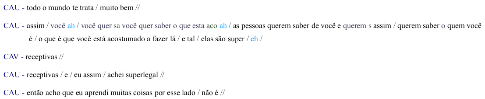
Grande parte dos sistemas atuais em diversas tarefas de PLN é treinada em textos já existentes, e, portanto, podem acessar frases ou trechos por completo na hora de fazer predições. Em particular, dois dos melhores modelos atuais dependem, por definição, da disponibilidade do texto completo: as BiLSTMs (Schuster; Paliwal, 1997) constroem representações forward e backward da frase e os Transformers (Vaswani et al., 2017) são otimizados para processamento em paralelo, usando o mecanismo de atenção que acessa todo e qualquer token de entrada de uma vez (Madureira; Schlangen, 2020). Já no processamento em tempo real, os modelos precisam fazer essas predições com base em prefixos dos textos, conforme eles vão sendo construídos, sem saber o que virá em seguida (Köhn, 2018; Schlangen; Skantze, 2011). Quando o próximo trecho fica disponível, o modelo pode ter inclusive de revisar previsões passadas, propondo uma nova predição que leve em conta a última porção da entrada recebida, como se vê na Figura 15.3.
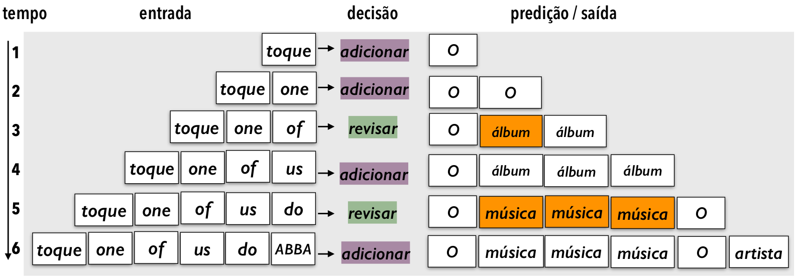
Fonte: Exemplo fictício, adaptado de (Madureira et al., 2023)
Vemos como é desafiador o PLN feito em tempo real. Então, por que tentar modelar o processamento incremental nos modelos de diálogo? Não é mais simples esperar o final da contribuição do interlocutor e trabalhar com material completo? De fato, tudo depende da aplicação. Como discutido por Schlangen; Skantze (2011), há vantagens em dois principais aspectos: reatividade e naturalidade. O quesito reatividade se manifesta em um ganho do ponto de vista de engenharia, já que, em uma conversa em tempo real, um agente que espera o interlocutor terminar de falar para só então começar a processar o conteúdo tem reações mais lentas, o que é perceptível e acaba causando silêncios longos e incômodos na fluência da conversa. Por mais que o processamento interno ocorra rapidamente, variações mínimas de silêncio já são passíveis de interpretações adicionais pelos humanos (Bruneau, 1973; Roberts et al., 2006; Wilson; Zimmerman, 1986). Se o processamento começa de imediato e vai sendo atualizado a cada nova palavra, quando o interlocutor chega ao final do enunciado o modelo já tem uma construção parcial de como vai agir em seguida, e a reação é, portanto, mais rápida. Já em questão de naturalidade, o modelo consegue lidar de forma mais genuína com os fenômenos que trataremos a seguir, como produzir e compreender sinais de feedback, construir declarações colaborativamente (como vimos no exemplo) e lidar melhor com interrupções e troca de turnos.
Em (Schlangen; Skantze, 2011), encontramos uma abrangente formalização de possíveis implementações do processamento incremental para modelos de diálogo, levando em conta modularidade, granularidade, relações entre entrada e saída e possibilidade de revisões.
15.3.2 Troca de Turnos e Estrutura Sequencial
Como vimos, conversas são compostas de enunciados de dois ou mais participantes. Mas como esses enunciados se organizam sequencialmente? Como cada participante decide quando falar e quando estar em silêncio? Basicamente, um diálogo é uma sequência de enunciados e de silêncios; os enunciados podem ser de uma só pessoa ou sobreposições de mais de uma pessoa ao mesmo tempo, enquanto os silêncios podem ocorrer durante o enunciado de uma pessoa (pausas) ou nos momentos entre troca de turnos dos falantes (vãos) (Heldner; Edlund, 2010).
Dadas as boas maneiras, intuitivamente podemos crer que, enquanto uma pessoa fala, a outra escuta, mas não é sempre isso que acontece: sobreposições são relativamente frequentes (Liesenfeld et al., 2023). Há diversas tentativas de formalização das dinâmicas do processo denominado troca de turnos, isto é, como os participantes da conversa decidem como manter seu turno e continuar falando, passá-lo deliberadamente para outra participante (por exemplo, ao fazer uma pergunta) ou tomar o turno por conta própria (Ruiter, 2019; Sacks et al., 1978). Há também a possibilidade de tomar o turno mesmo enquanto uma outra pessoa ainda está falando, por meio de interrupções (Bennett, 1978; Yang et al., 2011).
As decisões de troca de turno se baseiam em deixas (cues) de várias fontes: verbais, prosódicas, de intonação, gestuais, de olhares e de respiração (Duncan, 1972; Skantze, 2021). Especialmente nos momentos em que falas parecem se aproximar de um fim, ou quando há momentos de silêncio, é comum haver sobreposições. Há também tentativas de formalizar mecanismos de resolução das sobreposições, isto é, como decidir quem continua falando quando elas ocorrem (Schegloff, 2000). Mostramos um exemplo de trocas de turno na Figura 15.4, na qual há pausas, sobreposição e interrupção de turno.
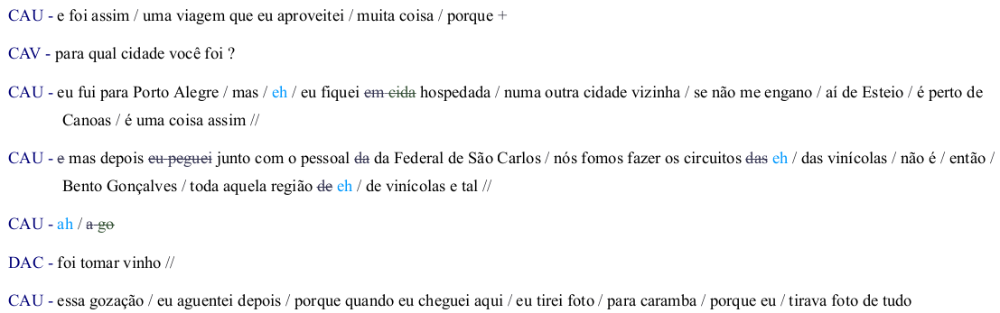
A sequência de turnos não ocorre de forma aleatória em uma conversa coerente. Schegloff; Sacks (1973) propuseram o conceito de pares de adjacência para classificar os tipos típicos de pares de turnos em um diálogo, por exemplo: pergunta e resposta, saudações, oferta e aceita ou recusa, etc. Cada uma dessas contribuições se relaciona com o que foi dito antes e influencia o que será dito depois, podendo ser expandida com adendos antecipatórios, intermediários ou posteriores (Stivers, 2013). Uma conversa não é feita apenas de pares: outras categorias de sequências existem, como narrativas (Stivers, 2013) e os chamados sub-diálogos (Larsson, 2017; Litman; Allen, 1987), isto é, subsequências coerentes de turnos inseridas dentro de sequências mais longas (como na Figura 15.5). Os atos de fala (Levinson, 2017; Sadock, 2006) e os mecanismos de atenção e intenção na estrutura do discurso (Grosz; Sidner, 1986) também estão presentes na organização da estrutura do diálogo.
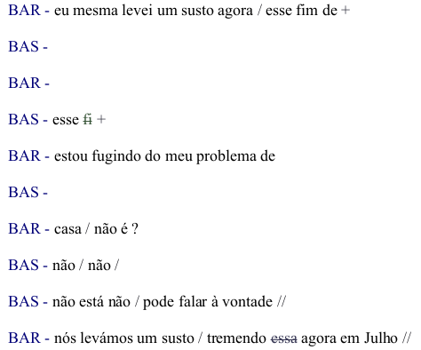
Fonte: CRPC, arquivo A_Fazenda
Evidentemente, é desafiador para modelos reconhecerem, integrarem e produzirem tantos sinais e subjetividades. Os modelos atuais não dão conta de tudo, mas há algumas estratégias possíveis para tornar esse processo mais controlado, como imposição de turnos alternados, com limites claros de que o enunciado acabou (como na comunicação por rádio ou com os grandes modelos de linguagem atuais) e duração da pausa como sinal mais notório. Para mais detalhes e uma recente revisão de literatura sobre o estado da arte, ver (Skantze, 2021).
15.3.3 Disfluências e Reparos
Como vimos no Capítulo Texto ou fala?, a fala tem disfluências, sendo composta por diversos fragmentos que nem sempre formam frases em uma gramática idealizada, e sua transcrição difere bastante de textos editados. Como descrito por Shriberg (1994, 2001), há várias formas de disfluências e descontinuidades. Resumidamente, temos as seguintes, com alguns exemplos exibidos na Figura 15.6:
pausa preenchida: sons como “hmm”, “ééé”, por exemplo quando a pessoa está pensando, hesitando ou tentando ganhar tempo (ver (Clark; Tree, 2002) para alguns usos);
repetição: uma palavra ou trecho repetido logo em seguida;
supressão: uma palavra ou trecho que é proferido, mas abandonado;
substituição: uma palavra ou trecho que é substituído por outros;
inserção: uma palavra ou trecho adicionado a trecho anterior;
erro de articulação: fonemas pronunciados incorretamente, geralmente por acidente.
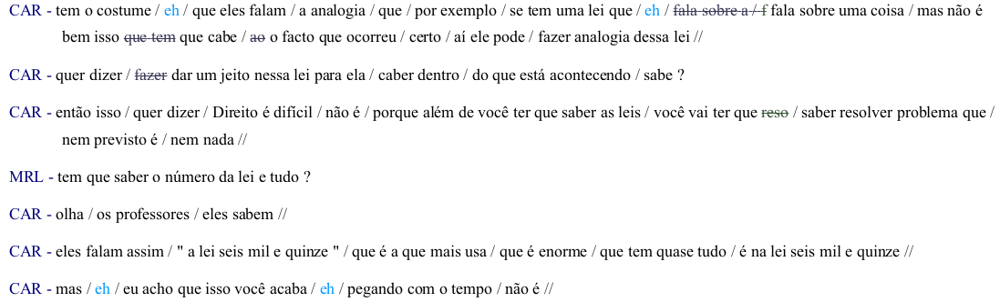
Há mecanismos linguísticos de reparo para se lidar com as disfluências e com outros problemas de comunicação. As correções podem vir da própria pessoa que fala (self-correction), imediatamente ou nos turnos subsequentes, ou como intervenção da pessoa que ouve (other-correction) e decide reparar um enunciado (Kitzinger, 2012; Schegloff et al., 1977). Um outro mecanismo essencial para ajustar mal entendidos, dúvidas ou erros (desde problemas acústicos a questões pragmáticas) é o pedido de clarificação, no qual o interlocutor demonstra que algo não ficou claro e pede esclarecimento (Purver, 2004). Na Figura 15.7, vemos um exemplo de pedido de clarificação, possivelmente por motivo acústico, seguido de um reparo em forma de repetição do que já foi dito, de forma mais bem articulada sonoramente.
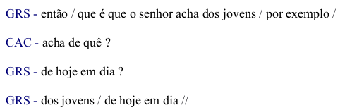
Fonte: CRPC, arquivo Criar_Filhos
Não devemos, todavia, considerar que esses fenômenos são ruídos que devem ser evitados no design de um modelo ou eliminados dos dados. São fenômenos naturais da produção e compreensão de linguagem em tempo real pelos humanos, que vão fazer parte do diálogo e, inclusive, carregar significado. Como discutido por Ginzburg et al. (2014), disfluências exercem efeitos no discurso e se relacionam aos componentes da estrutura do diálogo. Embora em diálogos via texto algumas disfluências sejam corrigidas antes de a mensagem ser enviada (como erros de digitação que são percebidos na hora), ainda assim reparos são necessários (por exemplo, quando o corretor automático substitui uma palavra que não queremos dizer, ou quando não formulamos bem o conteúdo da mensagem e precisamos nos explicar).
Implementar formas de lidar com todos os tipos de disfluências e reparos é complexo, mas há algumas estratégias que podem ser utilizadas perante incertezas do ponto de vista do sistema, como pedir para o interlocutor repetir o que disse, confirmar se uma hipótese está correta ou propor alternativas e deixara usuária ou o usuário decidir qual é a desejada (ver, por exemplo, (Skantze, 2007)).
15.3.4 Construção de Base Comum e de Referências
Para uma conversa fazer sentido, deve haver coerência entre as contribuições de cada participante, que cooperam para atingir compressão mútua em busca de algum objetivo (Cervone et al., 2018; Perrault; Allen, 1978). Essa cooperação se manifesta em um processo denominado embasamento (grounding) com os participantes negociando significados e trabalhando juntos para dar e obter evidência positiva ou negativa de que enunciados foram compreendidos de forma satisfatória para o propósito da conversa (Benotti; Blackburn, 2021; Clark; Brennan, 1991). Mostramos um exemplo do embasamento acontecendo no diálogo da Figura 15.8.
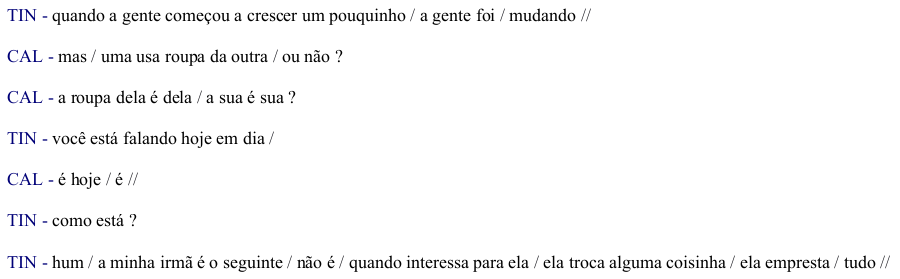
A construção a cada turno da conversa edifica passo a passo a base comum (common ground) entre os participantes (Clark; Brennan, 1991). O conhecimento pode ser privado ou compartilhado entre os participantes (Ginzburg, 2012), e os significados vão sendo construídos em conjunto, coordenada e colaborativamente, ao longo da conversa (Clark, 1996a). Esse processo demanda que cada um “tome nota” mentalmente do que já foi compartilhado e do que ainda é confidencial (Lewis, 1979). Falando mais concretamente, se em um determinado ponto da conversa eu lhe conto uma novidade que você não sabia, ela passa, daí em diante, a fazer parte de um saber compartilhado entre nós. Se voltarmos a conversar daqui alguns dias, eu posso pressupor que você já sabe desse fato sem repeti-lo. Claro que, às vezes, algum lapso de memória ocorre, e os participantes precisam reconstruir a base juntos.
A base comum contém tanto conhecimento da experiência pessoal partilhada quanto conhecimento comunal, ou seja, normas sociais e aspectos culturais (Clark, 1996b). Sendo assim, torna-se relevante o conceito de teoria da mente (Brennan et al., 2010), pois cada participante precisa criar e levar em conta um modelo mental do outro (o que eu creio que minha interlocutora sabe ou não sabe) para ajustar o que vai dizer.
Dois fenômenos que emergem nesse processo são os sinais de feedback ou backchannels, termo cunhado por Yngve (1970), e a construção colaborativa de enunciados (Clark; Schaefer, 1987; Purver et al., 2009). Os sinais de feedback são emitidos por quem ouve, para demonstrar em tempo real que está compreendendo ou acompanhando o que está sendo dito, por exemplo, dizendo “aham” ou “é” durante um enunciado da outra pessoa. Vemos alguns exemplos na Figura 15.9. Já a construção colaborativa ocorre quando um enunciado é construído conjuntamente pelos participantes, tentando chegar em um acordo quanto ao significado antes de prosseguir. Em particular, o que pode acontecer em parceria é a construção de referências, quando um participante inicia uma menção a alguma coisa e, a partir daí, com mecanismos de reparo, expansão e substituição, chegam juntos a uma referência de mútua compreensão (Clark; Wilkes-Gibbs, 1986; Heeman; Hirst, 1995).
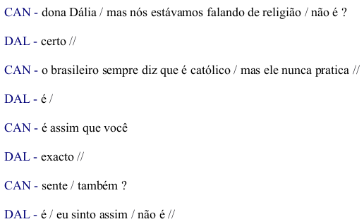
Fonte: CRPC, arquivo O_Acidente
15.3.5 Sinais Multimodais
Durante uma conversa face a face, podemos usar gestos para apontar objetos, sinalizar direções ou demonstrar tamanhos. Mexemos a cabeça afirmativa ou negativamente. Nossa expressão facial pode exteriorizar emoções que se tornam perceptíveis ao interlocutor, como espanto, alegria ou irritação. Além disso, olhar para alguém também pode ser um meio de se comunicar, e às vezes é natural desviarmos um pouco o olhar enquanto estamos no meio de um enunciado. Ou seja, além dos enunciados linguísticos, muitas outras ações ocorrem durante um diálogo: há dinâmicas dos olhares (Bavelas et al., 2002; Beattie, 1978; Rossano, 2012), dos gestos (Bavelas et al., 1992; Wagner et al., 2014) e das expressões faciais (Bavelas; Gerwing, 2007; Chovil, 1991) em curso, em paralelo com a fala, e que também carregam ou adicionam significado. Como são dimensões além do processamento de linguagem natural, não trataremos de cada uma em detalhes aqui, mas queremos frisar que elas são também muito relevantes em interações em que os participantes podem se ver.
15.3.6 Análises de diálogo em português
Ao longo desta seção, apresentamos definições de fenômenos que ocorrem em diálogos de maneira geral. Há trabalhos publicados no contexto da língua portuguesa, trazendo análises e também contribuições empíricas. Para facilitar a identificação, reunimos alguns trabalhos por tópico na Tabela 15.1. É impraticável listar todos os trabalhos existentes, de modo que esta seleção serve como ponto inicial para busca de outras contribuições.
| Tópico | Trabalhos |
|---|---|
| análise de conversação e fala-em-interação | Martins (1987), Barros (1999), Bulhões et al. (2006), Garcez (2006), Alencar (2008), Cunha Recuero (2008) |
| atos de fala e outras questões pragmáticas | Korsko (2004), Osborne (2010) |
| base comum e ação conjunta | Oushiro (2011), Hilgert (2012), Oushiro; Mendes (2012), Hilgert (2014), Kanitz; Frank (2014), Souza (2021) |
| continuações e feedback | Freschi (2017), Sousa et al. (2022) |
| diálogos em língua de sinais | Gomes et al. (2020) |
| inserções, repetições, reformulações | Fávero et al. (1998), Oliveira et al. (1998), Essenfelder; Rodrigues (2005) |
| interfaces conversacionais | Jacintho; Penha (2016) |
| jogos de linguagem | Nunes (2016) |
| marcadores conversacionais | Nunes (2017) |
| múltiplos participantes | Rocha et al. (2014) |
| narrativas e digressões | Koch (2012), Tesch (2015), Ferla (2020) |
| organização de turnos | Antonio (2003), Bernardo (2005), Reis; Silva (2013), Carvalho; Acioli (2017), Carapinha; Plag (2018) |
| perguntas e respostas, informações | Fávero et al. (1996), Konrad (2018) |
| referenciação | Marcuschi (2001) |
| reparo | Toscano (2001), Loder et al. (2002), Garcez; Loder (2005), Oliveira; Dias (2018) |
| sinais multimodais | Rodrigues (2003), Schröder (2015), Ostermann et al. (2016), Avelar; Ferrari (2017), Vogel (2018), Kanitz; Luz (2019) |
| sobreposições | Stein (2010), Marega; Jung (2011), Moraes Garcez; Stein (2015) |
| tópico, foco e ponto de vista | Bernardo (2001), Bernardo (2002), Bernardo (2003), Botelho (2011), Bernardo et al. (2021) |
| transcrição | Gago (2002), Pimentel (2016) |
15.4 Modelos e Tarefas: Implementando um processo complexo
Fundamentamos bem até aqui quão multifacetado e rebuscado é o processo de um diálogo. Ao longo do texto, já fomos destacando alguns desafios de se criar sistemas que consigam “jogar o jogo” do diálogo de acordo com todas as suas estratégias. Vamos, agora, analisar esse tema mais tecnicamente, abordando dois aspectos: modelos e tarefas. Trataremos de modelos como tentativas de realizar computacionalmente o diálogo (ou algum de seus fenômenos), e tarefas, como formas de simplificar a representação desse processo de modo a aplicar, por exemplo, métodos de aprendizado de máquina, como se tornou usual no atual paradigma de PLN.
15.4.1 Modelos
Podemos conceber dois principais objetivos de nos aventurarmos a modelar diálogo: definir modelos computacionais para fins de pesquisa, em busca de expandir a compreensão científica de como o uso interativo da linguagem funciona, ou como uma pura aplicação que funcione para determinado fim, na qual as técnicas de engenharia podem acabar se sobrepondo às teorias linguística e cognitiva. No segundo propósito, já existem diversos exemplos em funcionamento, como os chatbots em uso na indústria, que atendem a demandas concretas. Já quanto ao primeiro propósito, há muito a se desvendar.
Como vimos, o uso interativo da linguagem ocorre de forma situada, em um contexto. Schlangen (2023a) propôs alguns requisitos teóricos para agentes conversacionais, divididos entre demandas representacionais e em processos de suporte. Ou seja, por um lado, é necessário que o agente ideal tenha um modelo de linguagem, um modelo de representação do mundo, um modelo da situação em que está inserido, um modelo do discurso e um modelo de si próprio e dos outros. Por outro lado, esse conhecimento é aplicado e atualizado através de processos, tendo como pilares o processamento e o aprendizado incrementais, e o embasamento conversacional e multimodal.
Ele constata que, em PLN, há tentativas de implementar partes desse conjunto de forma isolada, mas ainda não um modelo completo; além disso, várias dessas tentativas são simplesmente focadas mais no método de aprendizagem de máquina que está em voga do que no fenômeno interativo em si. Em outras palavras, uma vez que temos, por exemplo, métodos de sequência-a-sequência ou de rotulagem de sequência funcionando bem em diversas áreas, acaba-se por tentar moldar o diálogo de forma a se adequar às representações exigidas por tais métodos, em vez de partir da compreensão do fenômeno para o método adequado. Isso é uma forma de viés cognitivo conhecida como lei do instrumento6, e suas implicações são discutidas na literatura (Wagstaff, 2012).
Tendo o ideal teórico em mente, vamos apresentar algumas abordagens principais na construção de modelos de diálogo. Para sermos sucintos, vamos focar em sistemas mais voltados a aplicações práticas, tratando de seus objetivos, componentes e paradigmas. Dada a natureza introdutória deste capítulo, não introduziremos detalhes técnicos, os quais podem ser encontrados em fontes dedicadas à implementação de sistemas de diálogo. Para uma exposição mais detalhada sobre modelos de bate-papo, veja o Capítulo ChatGPT, MariTalk e outros agentes de conversação; todavia, note que produtos como o chatGPT não são modelos de diálogo propriamente ditos. Eles são apenas modelos de linguagem preditores de próximas palavras, que foram encaixados no uso para bate-papo, no que Skantze; Doğruöz (2023) descrevem como uma “solução” que achou seu problema (em vez do contrário).
Primeiramente, para quê se utiliza um sistema de diálogo? Há muitas possibilidades: atendimento ao consumidor, suporte técnico, busca de informações em base de dados, interface de usuário, assistentes virtuais em automóveis ou casas, entre outros. O objetivo em si, somado ao contexto onde vai ser utilizado, determina algumas dimensões principais (Jurafsky; Martin, 2023), a saber:
propósito: o sistema pode ser orientado a tarefas, no qual o diálogo ocorre com um propósito bem definido (reservar um restaurante ou preencher um formulário), ou buscar manter diálogos “abertos”, ou seja, bate-papo, com conversas sobre temas genéricos mais voltadas a entretenimento;
dispositivo: o sistema pode estar incorporado em um robô ou em um aparelho específico, ter uma representação virtual em forma de avatar ou ícone, ou, ainda, ser uma voz acessória saindo de um dispositivo que realiza outras atividades;
domínio: o sistema pode ser tanto restrito a um único tópico (reserva de viagens) quanto multitópico (reserva de viagem e reserva de restaurante) ou genérico (i.e. qualquer tópico);
modalidade: o sistema pode ter de lidar com texto e/ou com som e/ou com multimodalidade, que inclui imagens e vídeos;
iniciativa: o sistema pode permitir interações nas quais apenas ele tem iniciativa (por exemplo, o sistema faz perguntas e interlocutores apenas respondem), ou apenas a usuária ou o usuário tem iniciativa (o sistema apenas responde a comandos) ou uma mistura dos dois.
Modelos orientados a tarefas só precisam atingir um objetivo, o que limita bastante o tipo de interação, facilitando tanto a modelagem quanto a avaliação. Já os modelos de bate-papo exigem maior versatilidade quanto aos rumos da conversa, embora ainda exista a possibilidade de restringi-los quanto a tópicos (e.g. um chatbot que saiba bater papo apenas sobre cinema).
Agora, o que um sistema de diálogo precisa ter? Vamos retomar os elementos básicos do formato elementar de uma conversa, expostos na Seção Conceitos: O que forma um diálogo?. Momento a momento, um participante precisa (i) captar o que está sendo dito, (ii) compreendê-lo, (iii) atualizar o estado da situação em sua mente, (iv) decidir o que fazer a seguir, se necessário buscando informações na memória, e, então, (v) gerar e (vi) proferir o próximo enunciado.
Os sistemas mais clássicos realizam esse processo de forma modular (e possivelmente seriada), em que cada componente se especializa em uma dessas tarefas (Williams et al., 2016). Primeiro, (i) há um sistema de reconhecimento de fala que capta o som e o converte para texto. Então, (ii) há um componente que executa a compreensão da linguagem e transforma a entrada em algum tipo de representação linguística formal. Depois, (iii) há um “gestor do diálogo” (dialogue manager) coordenando como ajustar seu estado interno com base nas informações recebidas, mantendo uma representação do histórico da conversa. Em seguida, (iv) há um módulo “tomador de decisão” que gere uma política do que fazer a seguir, possivelmente com acesso a uma base de dados. A representação dessa próxima ação é (v) convertida em texto por um componente de geração de linguagem natural, que então é (vi) transformado em som por um sintetizador. Na Figura 15.10, vemos uma ilustração dessa arquitetura. Em sistemas só de texto, o primeiro e o último componentes não são necessários, e em sistemas por língua de sinais ou multimodais, a captura da entrada e a sintetização da saída se dá incluindo imagens.
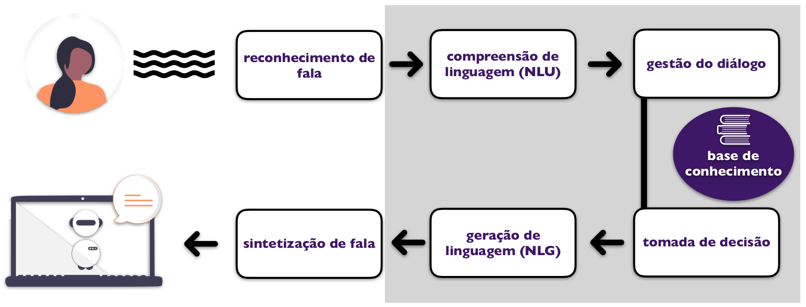
Fonte: Adaptado de (Williams et al., 2016), com ilustrações de unDraw
Atualmente, na era do aprendizado de máquina, a modularização tem sido substituída por tentativas de propôr arquiteturas de ponta a ponta (end-to-end) (Serban et al., 2016; Vinyals; Le, 2015), ou seja, modelos que recebem uma entrada em forma de texto, criam uma representação interna abstrata em forma de vetores numéricos, e geram uma saída em forma de texto. Isso reduz todo o processo do diálogo a uma única tarefa: dado um contexto, produzir o próximo enunciado, sem um componente explícito de gestão do diálogo. Há inclusive tentativas de ir direto de som a som, sem usar o texto como mediador (Lakhotia et al., 2021). Arquiteturas de ponta a ponta têm limitações, de modo que há também alternativas híbridas, que incluem alguns componentes de representação linguística no processo.
Finalmente, como operacionalizar o processo? Temos dois principais paradigmas: sistemas baseados em regras (rule-based) e sistemas baseados em dados (data-driven) (Jurafsky; Martin, 2023). Nos sistemas baseados em regras, todo o fluxo da interação é definido por (muitas) diretrizes no estilo “se isso, então aquilo”. Já nos sistemas baseados em dados, busca-se extrair padrões e generalizações de grandes datasets contendo uma vasta quantidade de exemplares de interações já realizadas no passado. Enquanto o primeiro parte do princípio de que seria possível formalizar os processos que governam o diálogo em forma de uma lista finita de regras, o segundo pressupõe que todos os fenômenos que discutimos poderiam ser implicitamente extraídos diretamente de grandes datasets por métodos estatísticos de aprendizado de máquina. Na prática, ambos têm limitações.
A geração dos enunciados também pode ocorrer com base em regras, ou seja, serem formados a partir de templates pré-definidos, bem como ser treinada a partir de dados por aprendizado de máquina ou, ainda, depender de técnicas de recuperação de informação, como as discutidas no Capítulo Recuperação de Informação e (Jurafsky; Martin, 2023).
Especialmente em sistemas orientados a tarefas, é comum definirem-se estruturas de representação (frames) com base na expertise de domínio, para orientar o design do modelo (Jurafsky; Martin, 2023). Tomemos como exemplo um agente que recebe e direciona pedidos de pizza. Aqui, o domínio é bem restrito (pedido de pizza), de forma que podemos definir as seguintes lacunas a serem preenchidas: QUANTIDADE, SABORES, ENDEREÇO, CLIENTE. Essas lacunas estão presentes em qualquer pedido, e a tarefa do agente é instanciar os valores de cada um para cada pedido, extraindo as informações da conversa com o cliente. Essa representação estruturada do pedido pode, então, ser passada para um dispositivo que o processe automaticamente.
Uma vantagem de sistemas baseados em regras é a interpretabilidade, pois sabe-se exatamente como cada passo da interação é processado pelo sistema. Já sistemas baseados em dados podem dar mais flexibilidade ao reduzir a necessidade de o processamento ter de passar por uma representação formal “imposta” por quem desenvolve o sistema, além de conseguir extrair padrões que nem sempre estão patentes aos humanos; mas isso reduz o controle e a interpretação, o que pode ser arriscado.
Os métodos de aprendizado de máquina supervisionados costumam ser ancorados em datasets estáticos. Esse paradigma é limitante para diálogos: enquanto há muitas trajetórias válidas para uma conversa, só um exemplar é observado nos dados para cada caso. Por isso, há muitos sistemas de diálogo que se baseiam em processos de decisão de Markov, o que permite o uso de métodos de aprendizado por reforço, nos quais a interatividade tem papel central. Para mais detalhes, ver (Rieser; Lemon, 2011).
15.4.2 Tarefas
Para fazer tudo que um humano faz, modelos de diálogo podem precisar integrar várias áreas de PLN de uma vez. Minimamente, é preciso reconhecimento de fala, compreensão de linguagem natural (que em si já envolve diversas “tarefas”), produção de linguagem natural (mais muitas “tarefas”) e síntese de fala. Cada um desses componentes é uma área de pesquisa em si, e integrá-los em um único sistema é, portanto, uma árdua empreitada.
Na verdade, a versatilidade dos humanos ainda é impossível de modelar por completo de uma só vez. O que ocorre, então, é a definição de sub-tarefas que tentam capturar um ou alguns aspectos do diálogo de cada vez. Algumas tarefas são bem motivadas pela teoria do diálogo, como predizer quando um pedido de clarificação é necessário, identificar o que é uma disfluência, atualizar informações que foram corrigidas, ou decidir quando é um momento oportuno para emitir um sinal de feedback. Já outras são concebidas de forma a fazer o fenômeno se subjugar às ferramentas de aprendizado de máquina disponíveis (usando por exemplo um paradigma de classificação), o que nem sempre é ideal, por ofuscar a motivação científica e a justificação teórica para o funcionamento do sistema.
Vamos listar algumas das tarefas mais conhecidas. A lista não é exaustiva, já que há muitas possibilidades e novas tarefas podem ser definidas a depender dos dados disponíveis. Incluímos os nomes em inglês para facilitar uma eventual busca por mais conteúdo. Na Figura 15.11, mostramos um exemplo ilustrativo de como o gerenciamento do diálogo pode ser feito com base em lacunas e intentos.
Gerenciamento de diálogo (dialogue management): monitoramento, controle e tomada de decisões sobre todo o fluxo da conversa, com coordenação de todos os componentes do sistema.
Monitoramento do estado do diálogo (dialogue state tracking): controle do atual estado da conversa através de uma representação interna, por exemplo, quais informações já estão disponíveis ou não para um determinado fim; comum em cenários em que está pré-estabelecido quais requisitos devem ser atendidos ao longo da conversa, como em uma reserva de restaurante.
Classificação de atos do diálogo (dialogue act classification): enquadramento de um enunciado em uma taxonomia de unidades da conversa, isto é, identificar o que é, por exemplo, pergunta, afirmação, pedido ou promessa.
Monitoramento de conjecturas (belief state tracking): estimação da certeza de hipóteses construídas pelo sistema ao longo da conversa.
Detecção de final de turno (end-of-turn detection): identificação de quando um enunciado está prestes a acabar para o sistema tentar tomar o turno, se for o caso.
Detecção de disfluências (disfluency detection): identificação das partes do enunciado que são disfluências e, mais especificamente, como atuar perante elas (ou seja, ignorar repetições mas acrescentar ou atualizar o que foi inserido ou substituído).
Segmentação de enunciados (utterance segmentation): decisão de como quebrar um enunciado, possivelmente longo, em sub-componentes. Por exemplo, quando uma pessoa dá uma série de instruções de uma vez, o sistema precisa definir cada passo.
Diarização de locutor (speaker diarization): identificação de qual participante está falando a cada momento.
Detecção de intenção (intent detection): identificação do propósito de um enunciado; por exemplo, um assistente virtual que identifica que a usuária deseja ouvir música.
Preenchimento de lacunas (slot filling): identificação de valores que se aplicam a slots pré-definidos em um contexto. Novamente, um assistente virtual que detectou que a usuária deseja ouvir uma música deve extrair o nome da música e/ou da artista no enunciado.
Geração do próximo enunciado (next turn generation): produção de uma fala ou mensagem a ser proferida a seguir com base na atual representação interna do sistema.
Resposta a perguntas (question answering): como responder apropriadamente a uma pergunta. Esta é uma tarefa de PLN em si (Capítulo Perguntas e Respostas), que pode ocorrer em sistemas de diálogo. Embora algumas fontes considerem que uma sequência fixa de perguntas e respostas forma um diálogo, isso é controverso.
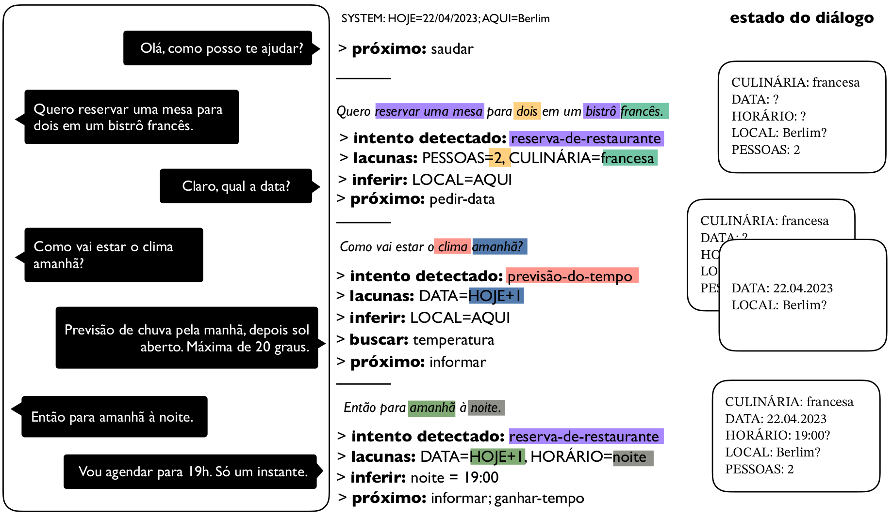
Fonte: Ilustração de elaboração própria, inspirada em (Coucke et al., 2018; Williams et al., 2016)
15.5 Avaliação: Verificando a qualidade de um sistema
Chegou a hora de nos ocuparmos de uma incumbência essencial: avaliar os modelos de diálogo. Como podemos mensurar quão bem um modelo participou de uma conversa? Quais aspectos devem ser levados em conta? Como medir características subjetivas como qualidade, efetividade e engajamento? Que impactos e influência esse sistema pode ter sobre usuários e usuárias e como ele pode afetar a realidade?
A avaliação de sistemas interativos exige uma análise intrincada. A cada turno, temos, por um lado, o tópico, o propósito e o contexto limitando as possibilidades de pertinência da próxima contribuição, mas, por outro lado, temos também uma infinidade de enunciados que são equivalentemente apropriados para dar continuidade. Por exemplo, se eu lhe pergunto que livro você está lendo, não seria muito conexo responder que ontem você viu um raio de sol pela janela ou que o preço do pacote de feijão subiu; há uma expectativa de que o próximo turno seja ou uma resposta direta à pergunta ou algo relacionado a ela. Mesmo assim, há diversas continuações válidas: “um livro muito interessante sobre PLN”, “um livro que minha professora me indicou”, “vários”, “você já esqueceu?”, “é segredo” etc. Algumas podem ser menos apropriadas que outras, mas não seriam necessariamente “erradas”.
A avaliação de modelos orientados a tarefas é um pouco mais fácil, pois tem-se um objetivo claro a ser atingido, de modo que podemos definir métricas de sucesso (isto é, quanto se atingiu desse objetivo) como proxy (isto é, um “representante”) para a efetividade da conversa. Já em modelos de bate-papo, não há algo tão palpável. Devido à multiplicidade de “respostas certas”, não basta ter um único gold standard para se comparar. Qualquer corpus vai conter apenas uma entre as infinitas amostras do que a conversa poderia ter sido, ou seja, aquela que foi realizada pelos participantes no momento da coleta. E se o participante tivesse mudado uma frase? É possível que a conversa teria tomado um rumo totalmente distinto, mas nós nunca saberemos.
A despeito das dificuldades, já há bastante literatura a esse repeito para nos direcionar. Dois principais marcos históricos foram as iniciativas PARADISE (Walker et al., 1997) e Trindi (Bos et al., 1999). A primeira é uma proposta de sistematização da avaliação de agentes conversacionais, definindo uma hierarquia que leva em consideração a satisfação dos usuários e usuárias, o sucesso da tarefa e a minimização de custos, com medidas de eficiência (tempo da conversa, número de enunciados) e de qualidade (demora na reação do sistema, taxa de reparos, etc.). Já na segunda, elabora-se uma checklist com critérios de comportamento do sistema que uma avaliadora ou um avaliador deve verificar; por exemplo, se o sistema lida com excesso ou falta de informação em um enunciado, se ele se adapta a falhas de comunicação, se a interpretação de um enunciado leva o contexto em conta, etc.
Como tratado em detalhe no Capítulo Avaliação de tecnologias de linguagem, pode-se optar por avaliação automática, através de métricas, ou por humanos. Idealmente, deve-se fazer ambas em conjunto, mas, como a avaliação por humanos é custosa e demorada, é importante termos também boas métricas para serem usadas de forma automática, deixando a avaliação por humanos para etapas mais cruciais. Notemos, todavia, que a avaliação automática é limitada, pois nem todos os aspectos de interesse podem ser bem formulados matematicamente. Por ser um tópico muito abrangente, há várias iniciativas recentes de revisão de literatura na área de diálogo que concentram o entendimento atual sobre o tema ou tentam propor uma unificação (ver, por exemplo (Braggaar et al., 2023; Deriu et al., 2021; Finch; Choi, 2020; Liu et al., 2016; Yeh et al., 2021)).
Em protocolos de avaliação automática, busca-se uma avaliação bem sistemática e objetiva, através do uso de (se necessário, múltiplas) métricas que operacionalizem as dimensões desejadas (Finch; Choi, 2020). Nesse caso, o processo deve ser repetível, focado e explicável, e as métricas devem preferencialmente ser bem correlacionadas com os julgamentos humanos (Deriu et al., 2021). Uma longa lista de métricas em uso foi compilada por Yeh et al. (2021), e novas métricas são propostas constantemente pela comunidade, pois cada aplicação pode precisar mensurar diferentes características do diálogo e da tarefa em questão. Algumas mais convencionais capturam similaridade entre o enunciado produzido pelo modelo e o que está realizado nos dados, coerência com o contexto, diversidade (entropia e inércia) e perplexidade do modelo de linguagem (Finch; Choi, 2020; Liu et al., 2016).
Na avaliação por humanos, quem deve avaliar o modelo? A responsabilidade de garantir uma boa avaliação é, inicialmente, da pessoa física ou jurídica que o desenvolve, todavia quem desenvolve o modelo não consegue ter uma abordagem neutra, devido a possíveis conflitos de interesse. Claro que durante o desenvolvimento avaliações parciais são feitas pela equipe desenvolvedora, mas no final e em alguns pontos cruciais é preciso uma avaliação imparcial. Algumas formas de fazer isso é através de experimentos, ou seja, deixando usuárias e usuários interagirem com o sistema e avaliá-lo, o que pode ocorrer trazendo pessoas ao laboratório, definindo tarefas de crowdsourcing ou fazendo experimentos de campo, em que o sistema é inserido em uma situação real; pode-se, ainda, simular o comportamento de um humano (deixando um modelo interagir com outro ou usando técnicas de self-play) (Deriu et al., 2021), mas isso se torna um outro problema7.
Há duas formas de se efetuar avaliação humana: interativa, na qual a pessoa avalia uma conversa que ela mesma teve com um sistema (o que é mais genuíno), ou estática, quando ela lê ou ouve uma interação do modelo com outra pessoa e julga sua qualidade (Finch; Choi, 2020). Pode-se, ainda, avaliar apenas um sistema de forma isolada ou capturar a preferência da avaliadora ou do avaliador ao julgá-lo em comparação a um outro sistema. Nesses cenários, é comum o uso de formulários de satisfação que são apresentados aos indivíduos após a interação com o modelo, para dar notas ou feedback sobre a experiência. Algumas das dimensões possíveis estão listadas na Figura 15.12.
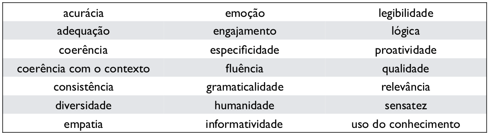
Fonte: (Finch; Choi, 2020)
Considerações éticas
Embora não seja uma tarefa simples, avaliar bem e de forma responsável é essencial. As aplicações do diálogo, como os chatbots e os assistentes virtuais, já foram inseridas em nossa realidade (muitas vezes de forma frenética e precipitada) e, portanto, atuam sobre ela e a transformam como qualquer agente. Por isso, é imprescindível ter meios de verificar esses efeitos, conhecer as limitações e os possíveis riscos do sistema, e ser transparente quanto a isso. Dessa forma, avaliação é muito mais do que obter um número que indica uma performance de sucesso. Ela deve ocorrer de forma holística ao longo de todo o processo de criação e inserção de um modelo, envolvendo escuta plena dos grupos sociais afetados por ele. Principalmente, deve estar pautada na ética, considerando todos os aspectos mais amplos de custo energético, fator humano, grupos vulneráveis, impacto ambiental e social, entre outros (Bender et al., 2021). Como qualquer tecnologia, aplicações desta área podem ser usadas para fins escusos e as considerações éticas do capítulo Capítulo Questões éticas em IA e PLN se aplicam aqui. Além disso, há reflexões éticas específicas de agentes conversacionais, tratando de vieses implícitos adquiridos através dos dados, uso de exemplos adversariais, violações de privacidade, dilemas de segurança, barreiras à reprodutibilidade dos resultados, perpetuação de injustiças, inclusão, transparência e antropomorfismo que têm de ser levadas em conta (Henderson et al., 2018; Murtarelli et al., 2021; Ruane et al., 2019).
15.6 Recursos: Trabalhando com dados e sistemas interativos
Modelar ou avaliar agentes que dialogam é tarefa que não precisa nem deve começar do zero. Já existem abundantes recursos disponíveis, tanto literatura, documentação e tutoriais quanto corpora, modelos pré-treinados, ferramentas e plataformas de desenvolvimento. Infelizmente, o problema da hegemonia da língua inglesa também afeta a área de diálogo, particularmente na disponibilidade de dados. Por outro lado, podemos ver isso como oportunidade de valorizar mais a língua portuguesa, buscando preencher esta lacuna de forma consciente e responsável.
15.6.1 Atuando de Forma Responsável
Uma ressalva importante antes de prosseguirmos: a facilidade com que se criam e acessam tantos recursos e ferramentas não deve ofuscar o alto risco envolvido em usá-los na realidade. O diálogo é uma atividade social, onde ética e confiança são valores centrais, e seus participantes têm direitos e obrigações (Allwood et al., 2000). Além disso, o uso da linguagem segue processos de natureza normativa ancorados na realidade, sendo ativamente construído para ser coletivamente útil (Schlangen, 2022). Se um agente artificial vai tomar parte nessa atividade, isso não deve ser feito com leviandade.
Há áreas extremamente delicadas (saúde mental, aconselhamento médico, populações vulneráveis) nas quais só se deve atuar se houver uma equipe multidisciplinar envolvida, com pessoas treinadas, capacitadas e bem informadas para tomar decisões baseadas em códigos de ética e valores morais, e com base em estudos meticulosos da real necessidade e do impacto de uma aplicação de diálogo em tal contexto. Há, ainda, formas perigosas de usar tecnologia (uso militar, ameaças, golpes, vigilância, perseguição) que lamentavelmente continuam a ser propostas, de modo que precisamos estar atentos para saber identificá-las. Muitas fontes propõem, com naturalidade ou suposta “neutralidade científica”, técnicas que podem ser facilmente prejudiciais e trazer alto potencial nocivo (como simulacros de “empatia” em máquinas que não têm sentimentos, técnicas de convencimento e dissimulação, discriminação, geração de conteúdo linguístico tóxico na internet, etc.). O uso enganoso, que induz usuários e usuárias a acreditar que o agente é uma pessoa, também é negativo e contraproducente (McGuire et al., 2023).
Trataremos mais dessas questões na conclusão, mas enfatizamos o alerta: tecnologias de linguagem têm impacto em nossa existência. Ao usar ou construir qualquer recurso, busquemos sempre nos formar e informar além da técnica, e ter garantias suficientes de que um sistema não será maléfico antes de desenvolvê-lo ou usá-lo (e não depois de já estar disponível no mercado).
15.6.2 Corpora
Na introdução, aludimos brevemente à inviabilidade de se modelar diálogo usando textos em monólogo, devido à natureza estática e confeccionada desse gênero. Mesmo corpora oriundos de redes sociais, que de fato contêm formas mais orgânicas da linguagem em uso, ainda coletam amostras de mensagens cujos usuários ou usuárias tiveram oportunidade de formular e editar o que queriam expressar antes de postar. Precisamos de dados que tenham sido gerados de forma interativa, com sua estrutura bem preservada durante a coleta. Quanto mais próximas forem essas interações do uso-alvo de uma tecnologia, melhor, pois os fenômenos podem variar em distribuição e frequência conforme o contexto.
A primeira dimensão importante a se considerar é se desejamos diálogos entre humanos ou entre humano e máquina, pois a forma de interação pode divergir em cada caso, como mencionamos na Seção Conceitos: O que forma um diálogo?. Como exposto no Capítulo Conjunto de dados, dataset e corpus, tamanho e a qualidade do corpus também são relevantes. Para pesquisas de fins mais qualitativos, pode ser suficiente um número mais baixo de exemplares. Muitos corpora foram coletados para fins de estudos linguísticos ou de documentação, sendo muito bem curados e anotados, mas relativamente pequenos. Já os métodos de aprendizado de máquina, famintos por dados, exigem quantidades copiosas de exemplares. Isso nem sempre está disponível e, quanto está, é raro a qualidade ser mantida, pois, devido ao tamanho, fica até difícil verificar o que o corpus contém (Paullada et al., 2021). Isso exige atenção redobrada ao utilizá-los, mesmo que sejam datasets populares e vastamente empregados.
Na área de diálogo, há ainda uma dimensão muito relevante: autenticidade da interação. Em alguns casos, os dados dos quais precisamos podem ser coletados em situações reais ou em circunstâncias que já ocorreram e ficaram registradas. Por exemplo, há diálogos em vídeos da internet, históricos de mensagens de texto, ou gravados por um robô em um evento. Uma empresa de celular possivelmente já terá um grande dataset de gravações de ligações de clientes, de forma que poderá explorar a estrutura desses diálogos já existentes para construir um assistente virtual. Há também muitos corpora de uso aberto ou de licença permissiva que podemos e devemos examinar para o nosso uso desejado, de modo a extrair o máximo de valor de um recurso já constituído.
Já quando precisamos de um corpus de diálogos em uma situação bem específica ou controlada, geralmente é preciso gerá-los, pois é algo que nem sempre está já disponível na realidade. Por exemplo, para modelar como as pessoas usam pedidos de clarificação, podemos definir um experimento no qual elas vão montar um quebra-cabeça juntas, para limitar um pouco a variabilidade das expressões e expor todos participantes ao mesmo tipo de tarefa.
Vamos começar com duas formas de criar dados conversacionais: através de experimentos, trazendo participantes a um laboratório, ou usando plataformas de crowdworking, o que se tornou bem comum na atualidade (mas não deixa de envolver questões éticas, ver o Capítulo Avaliação de tecnologias de linguagem). A vantagem desses métodos é ter controle sobre o tipo de interação, os equipamentos de captura de texto, som e imagem e a tarefa que os participantes realizam. Além disso, embora possa haver variações que se distanciem da realidade (como em qualquer experimento controlado), até certo ponto o diálogo é genuíno, ou seja, é gerado por humanos, de forma espontânea, mantendo suas estratégias internas autênticas. Mas há um entrave: para coletar dados de conversas face a face, é preciso sincronizar participantes para estarem no mesmo local ao mesmo tempo, ou, pelo menos, conectados simultaneamente. Ainda que estejamos interessados em interações via texto, é preciso que elas ocorram em tempo real. Isso implica a necessidade de coordenar horários, o que se torna uma tarefa adicional. Coletar dados de diálogo humano-máquina é mais fácil, pois um dos participantes é um programa que pode ser rodado quantas vezes for preciso e até mesmo simultaneamente em conversas diferentes, além de trazer garantias de que os participantes sempre serão expostos ao mesmo estímulo.
Há alguns procedimentos para contornar essa questão, que usam de subterfúgios para emular diálogos ou abrem mão de algumas das características discutidas na Seção Conceitos: O que forma um diálogo?. Há recursos compostos de dados assincrônicos, como conversas em fóruns da internet ou redes sociais. Há iniciativas que usam mão de obra humana para construir conversas artificialmente, pedindo a anotadores que imaginem o que falariam ou fariam em um determinado ponto de uma conversa da qual eles não participaram. Pode-se também simular diálogos de forma sintética, com templates e estruturas pré-definidas ou usando modelos de linguagem. Existem, ainda, corpora de conversas em que os participantes encenam um papel, como em jogos, ou que seguem um script, como legendas de filmes. A criatividade vai longe nessa área. Devemos estar cientes de que tais dados não são diálogos propriamente ditos, embora possam ser úteis para algumas aplicações específicas.
Há fenômenos que são raros em um diálogo típico, mas às vezes é exatamente eles que queremos estudar ou modelar. Por exemplo, para modelar uma estratégia para se lidar com reparos por inserção, precisamos de muitas observações que contenham reparos por inserção. Devido à sua relativa raridade, precisaríamos de imensos datasets, que fatalmente conteriam muitos diálogos sem qualquer reparo por inserção8. Tentar produzi-los artificialmente de forma explícita acaba resultando em dados menos autênticos. Há formas mais sutis de induzi-los implicitamente a acontecer.
Primeiramente, temos os jogos de diálogo, que são atividades curtas e bem delineadas, com um objetivo claro a se atingir em conjunto (Schlangen, 2023b). O jogo é definido de forma a fazer emergir certo fenômeno sem que os participantes se deem conta disso, pois seu foco se mantém em realizar a tarefa. Além disso, há experimentos que usam a técnica man-in-the-middle, que manipula propositalmente algumas mensagens da conversa (Healey; Mills, 2009), ou o Wizard of Oz9, no qual o participante pensa estar falando com um programa de computador mas, na verdade, ele é controlado em tempo real por um humano10.
Quando os diálogos se dão por voz ou sinais, é preciso primeiramente transcrevê-los se quisermos aplicar os métodos usuais de PLN. Transcrever dados de diálogo é difícil, pois é preciso representar pausas, sobreposições, pausas preenchidas, e todos os demais fenômenos da oralidade (Heeman, 1995; Kowal; O’Connell, 2014). Além disso, se quisermos uma representação mais rica, é preciso representar também gestos, olhares, emoções e entonação, tudo sincronizado com a transcrição das falas. Fora a transcrição, às vezes nos interessamos por algum fenômeno específico que precisa ser identificado nos dados através de camadas de anotações linguísticas. Esses procedimentos, além de levar tempo, envolvem quase inevitavelmente um grau de interpretação dos anotadores e dependem dos esquemas de anotação e transcrição que por vezes não dão conta de todos os fenômenos ou de casos ambíguos (Basile et al., 2021). Não é razão para não fazê-lo, devemos apenas estar bem informados sobre as consequências daquilo que anotamos ou deixamos de anotar.
Há numerosos corpora disponíveis hoje em dia. Listá-los seria difícil e a lista ficaria defasada em pouco tempo. Há alguns trabalhos de revisão de literatura recentes que trazem compilações (ver (Gonçalo Oliveira et al., 2022; Mahajan; Shaikh, 2021; Serban et al., 2018; Sundar; Heck, 2022; Thakkar; Pise, 2019)), e a plataforma ParlAI11 também disponibiliza diversos deles com uma interface comum, servindo como ponto inicial. Porém, uma boa estratégia é sempre usar ferramentas de busca com referências a trabalhos acadêmicos para encontrar os datasets existentes que sirvam ao uso em questão, lembrando de checar se a licença permite o uso desejado.
15.6.2.1 Corpora de diálogos em português
Vamos examinar em mais detalhes algumas fontes de dados de diálogo que estão disponíveis para a língua portuguesa. A Tabela 15.2 apresenta uma seleção de corpora, dando preferência aos que estão acessíveis (há mais trabalhos, mas nem todos disponibilizam os dados de forma aberta), com uma breve descrição. Há também uma lista (um pouco antiga) disponibilizada pela Linguateca12.
| Trabalho | Descrição | Tamanho | |
|---|---|---|---|
| CORAA | Candido Junior et al. (2022) | corpus para reconhecimento de fala, contém porções de diálogo em português brasileiro falado e transcrito | 290,77 h (total) |
| CORAL | Trancoso et al. (1998) | diálogos orientados a tarefas, falados e etiquetados, em português europeu | 64 diálogos |
| C-ORAL-ROM | Cresti et al. (2004) | documentação da forma oral de diversas línguas românicas, contém diálogos em português | 300 mil palavras |
| C-ORAL-BRASIL | Raso et al. (2015) | coletânea de diversos corpora de fala espontânea em português brasileiro e indígena, contém diálogos | 139 itens |
| CORP-ORAL | Santos; Freitas (2008) | conversas face a face em português europeu | 50 horas |
| CRPC | Nascimento; Gonçalves (1996) | contém áudio e transcrição de diálogos em várias variedades do português | milhões de tokens |
| FakeWhatsApp.Br | Cabral et al. (2021) | dataset de mensagens de texto instantâneas para fins de detecção de desinformação | 5.284 mensagens |
| Iboruna (ALIP) | Gonçalves (2019) | entrevistas sociolinguísticas e interações dialógicas em português brasileiro do interior paulista | 163 diálogos |
| NURC | Oliviera Jr. (2016) | contém entrevistas e diálogos, com áudio e transcrição, em português brasileiro | 279 h (total) |
| PALMA | Hagemeijer et al. (2022) | entrevistas semi-estruturadas, português em variações africanas | 108 h |
| Pirá | Paschoal et al. (2021) | dataset de perguntas e respostas sobre tema ambiental | 2.258 pares |
| SP2010 | Mendes; Oushiro (2012) | conversas em português brasileiro, variação paulistana | 60 gravações |
| – | Forte Martins et al. (2021) | dataset de mensagens de texto instantâneas sobre COVID-19 | 1.390 |
| – | Sanches et al. (2022) | traduções de dataset com diálogos orientados a tarefas e coletânea de posts em fóruns da internet | milhões |
15.6.3 Ferramentas
Assim como os recursos de dados, é infrutífero tentar listar as muitas ferramentas disponíveis. Há diversas novas ferramentas sempre aparecendo, mas muitas delas são efêmeras, pois deixam de ser atualizadas e se tornam defasadas. Além disso, muitas são soluções comerciais, e não temos intento de promover nenhuma em particular. Desta forma, também optamos por não tentar indicá-las. Em vez disso, vamos mencionar que tipos de ferramentas podemos procurar para atuar com modelos de diálogo:
coleta de dados: plataformas que permitam reunir dois um mais participantes com alguma interface, possibilitando (se for o caso) lhes apresentar conteúdo como imagens, e mantenha registros bem detalhados dos dados e metadados durante sua interação;
representação de dados: ferramentas que facilitem a criação de estrutura pertinente para os dados, de modo a representá-los de forma fidedigna à interação original mas em formato que facilite o processamento computacional;
transcrição de dados: sistemas que permitam transformar voz em texto, mantendo uma representação dos fenômenos do diálogo e da voz;
anotação de dados: programas que viabilizem identificar, anotar e armazenar metadados linguísticos de um diálogo;
implementação e autoria: software que propicie o desenvolvimento de agentes artificiais (authoring tools);
avaliação: soluções que favoreçam a análise quantitativa e qualitativa do comportamento e performance de um modelo.
Modelos de diálogo para o português
Além de soluções comerciais (Capítulo ChatGPT, MariTalk e outros agentes de conversação), há uma série de trabalhos acadêmicos que já se ocuparam de esquematizar sistemas que interajam em língua portuguesa ou com alguma tarefa de diálogo em português. Agrupamos uma amostra deles na Tabela 15.3.
| Trabalho | |
|---|---|
| agente conversacional pedagógico da área de programação | Mattos et al. (2022) |
| agente conversacional universitário | Cruz et al. (2020) |
| agente recuperador de informações jurídicas | Quaresma; Rodrigues (2003) |
| Ambrósio: assistente de casa | Neto et al. (2006) |
| ANA: chatbot para auxiliar o combate à COVID-19 | Fernandes et al. (2021) |
| AstroBot: chatbot para ensino e aprendizagem de física | Dantas et al. (2019) |
| BLAB: chatbot para disseminação de conhecimento sobre o território marítimo brasileiro | Matos et al. (2023) |
| CAERS: agente de conversação para intervenção pedagógica | Rossi et al. (2021) |
| chatbot para alocação de leitos em hospitais | Engelmann et al. (2021) |
| chatbot para universitários com possível perfil depressivo | Pires et al. (2023) |
| Cobaia: modelo de respostas a perguntas econômicas | Santos et al. (2020) |
| EDUARDO: modelo semântico para integração de conteúdo | Santos et al. (2016) |
| FLOSS FAQ: chatbot baseado em software livre | Lacerda; Aguiar (2019) |
| Guardião: chatbot para idosos | Ferreira et al. (2019) |
| Mordomo virtual | Coelho et al. (2008) |
| NL-SIIUE: agente recuperador de informações acadêmicas | Quintano; Rodrigues (2003) |
| Plantão Coronavirus: chatbot para detecção de sintomas da COVID | Coelho Da Silva et al. (2023) |
| Renan: chatbot para criação semi-automática de ontologias | Azevedo (2015) |
| TOB-SST: chatbot para suporte de educação sobre testes de software | Paschoal et al. (2019) |
15.6.4 Para Saber Mais
Evidentemente, este capítulo introdutório não abarca todo o conhecimento no universo das tecnologias de diálogo atuais. Há célebres livros e capítulos sobre várias perspectivas de diálogo, diversos dos quais foram citados ao longo deste capítulo e podem ser encontramos nas referências. Para encontrar mais artigos científicos, recomendamos as seguintes fontes como ponto de partida13:
o periódico Dialogue & Discourse: http://dialogue-and-discourse.org/
as conferências da Associação de Linguística Computacional, mais especificamente os tracks de diálogo nas grandes conferências: https://aclanthology.org/
o workshop do grupo de interesse dedicado a diálogo (SIGdial): https://aclanthology.org/sigs/sigdial/
o Workshop de Semântica e Pragmática do Diálogo (SemDial): https://www.semdial.org/
o Workshop Internacional de Sistemas de Diálogo Falado (IWSDS): https://dblp.org/db/conf/iwsds/index.html
Para a língua portuguesa, não parece haver uma fonte centralizadora. Há artigos sobre diálogo publicados em conferências de PLN (PROPOR, BRACIS, STIL) e também diversas teses que podem ser consultadas nos repositórios das universidades.
15.7 Conclusão: Mantendo o valor humano em foco
Antes de encerrar, vamos refletir um pouco sobre o que exploramos neste capítulo. Constatamos que o diálogo é parte vital de nossa humanidade, examinamos como ele ocorre como construção linguística, apresentamos formas de modelá-lo, bem como alguns recursos disponíveis em língua portuguesa, e consideramos a indispensabilidade de uma avaliação sólida e ampla. Vimos que é uma área de certa forma unificadora, na qual muitas tarefas de PLN podem ser relevantes e têm de trabalhar de forma orquestrada.
Ainda cabe uma pergunta, e quiçá a principal: por que estamos fazendo isso? Por que tentar criar sistemas que conversem conosco como humanos? Queremos, realmente, substituir um interlocutor humano por um programa de computador? O fato de conseguirmos criar aplicações (por exemplo, chatbots) não significa que devamos necessariamente fazer isso, nem que tal tecnologia seja sempre uma solução segura e desejada. Temos, outrossim, imensa responsabilidade acerca de nossos atos e de nosso conhecimento.
Ora, claro que há utilidade e benefícios: pode-se, por exemplo, automatizar certas tarefas monótonas, criar interfaces que facilitem a comunicação com a usuária ou o usuário de um dispositivo ou contribuir com o processo criativo de artistas. Principalmente, modelos de diálogo podem nos ajudar a progredir no entendimento científico do que é e de como funciona nossa habilidade cognitiva de uso interativo de linguagem.
Mas também há riscos e perigos reais e concretos em questão de vigilância, uso bélico, disseminação de informações falsas, segurança, privacidade e grupos vulneráveis, como ocorre com diversas tecnologias. Mais especificamente, é comum ver tentativas (na academia ou na indústria) de criar chatbots otimizados para técnicas de persuasão, de tentar simular emoções (obviamente, não genuínas), de incorporar uma “personalidade” ao sistema, de fingir se passar por um humano ou de substituição de profissionais especializados (como médicas e psicoterapeutas). Há, ainda, os riscos da antropomorfização (Abercrombie et al., 2023). São caminhos que evidentemente apresentam conflitos éticos e morais e que devem envolver pessoas capacitadas para pensar, identificar e, se necessário, regular essas questões, e não apenas implementar os detalhes técnicos. Infelizmente, há frequentemente uma supremacia de interesses comerciais ou políticos em vigor que, somados ao ritmo vertiginoso de criação de tecnologia nos últimos anos, torna muito difícil o controle e a remediação de efeitos colaterais nocivos.
É comum uma retórica em que a justificação para uma tecnologia sempre soe nobre. “O objetivo desse chatbot é fazer companhia para idosos sofrendo de solidão” ou “esse assistente virtual vai ajudar as pessoas cegas com a tecnologia” ou ainda “é para ajudar as tribos indígenas a preservar sua língua”. Nessas horas, usualmente os grupos vulneráveis são lembrados. Mas quanto das tecnologias são propostas de forma colonizadora, sem qualquer conexão com a escuta real dos membros dessas comunidades, para saber quais suas reais necessidades e desejos (Bird, 2020)? Em que contextos realmente um chatbot treinado em grandes dados é necessário? Às vezes, outras soluções mais simples e controláveis são plenamente suficientes ou interessantes, mas há uma pressão pelo uso, a qualquer custo, de algo que está na moda (e que, lembremos bem, geralmente cria uma dependência comercial com um fornecedor). Outras vezes, há atividades cujo fator humano deveríamos tentar preservar. Queremos um interlocutor artificial (e pouco controlável) fazendo companhia a idosos? Interagindo com indígenas? Dando conselhos a pessoas com risco de suicídio? É essa sociedade que buscamos?
E quanto aos chatbots “de propósito geral”, ou seja, que não são orientados a uma tarefa específica? Precisamos de um único agente artificial centralizador que saiba ensinar a fazer um guacamole, indicar filmes, dicas de maquiagem e ainda responder a questões existenciais? E que preço ético paga-se por práticas comerciais por trás desses modelos?14 Nesse âmbito, Skantze; Doğruöz (2023) identificam um paradoxo muito pertinente envolvendo os atuais modelos de linguagem otimizados para chat: eles são modelos genéricos que não constroem base comum (além do contexto dado no prompt), fomentando apenas o uso para “jogar conversa fora”, o que reduz a interação a um chat com fim em si mesmo. Além disso, eles sequer têm intento comunicativo: a atribuição de significado aos textos gerados é dada por quem os usa (Bender; Koller, 2020). Se ao mesmo tempo permite-se ser atribuída certa autoridade de conhecimento e “inteligência” a um modelo enquanto não se pode garantir ou verificar que seus enunciados têm o intento desejado e que as informações estão corretas (e, ainda, às vezes com tudo ocorrendo por trás de uma API intransponível e paga), arriscamos ir corroendo o valor social do diálogo,15 um altíssimo e irreversível custo a se pagar.
Para concluir, voltemos a Freire (1989): um diálogo é, ainda, um “ato de criação”, um caminho pelo qual ganhamos significação enquanto pessoas, encontrando-nos para pronunciar o mundo e conquistá-lo para nossa libertação. Tenhamos a coragem de nos opor a práticas destrutivas e adversas que visem tornar modelos de diálogo uma ferramenta de dominação, manipulação ou desinformação. Que saibamos construir aplicações que façam emergir e florescer nosso melhor como indivíduos e sociedade. Que aprendamos a usá-las com sabedoria, solidariedade e justiça, identificando e modulando de forma consciente e responsável seus impactos na realidade e priorizando sempre o profundo valor da linguagem e da existência humana.
15.8 Exercícios
Escolha um dos diálogos dos exemplos na Seção Fenômenos: O que ocorre em uma conversa? e clique no link correspondente para acessar o exemplar completo. Anote todos os fenômenos discutidos na Seção Fenômenos: O que ocorre em uma conversa? que você conseguir identificar. Quão fácil é fazer interpretações post factum com base apenas no áudio e/ou na transcrição?
Assista ou ouça um diálogo de um filme, série ou peça de teatro de sua preferência. Quais fenômenos discutidos na Seção Fenômenos: O que ocorre em uma conversa? não estão presentes? Quais parecem ocorrer mais ou menos raramente do que no exercício anterior?
Acesse o site do corpus NURC16, clique no ícone “Acessar página com o material” e depois em um título de sua escolha. Inspecione o conteúdo dessa página. Tente entender os formatos de arquivos de meta-dados. Por que todas essas informações são relevantes? Explore as anotações no arquivo de extensão .TextGrid. Você consegue entender a estrutura de dados deste arquivo?
Na página inicial do site to NURC, clique agora em “Acessar página de busca”. Construa uma pesquisa, usando o filtro para buscar apenas por diálogos. Escolha um ID entre os resultados e clique nele para acessar a conversa completa. Verifique a transcrição e, se lhe for possível, ouça o áudio acompanhado o texto. Que aspectos a transcrição não consegue capturar muito bem?
Considere os seguintes tipos de interação social: (a) duas amigas jogam um jogo online, simultaneamente, e se comunicam por uma ferramenta de chat na própria interface do jogo, sabendo que a comunicação está interceptada por um membro da equipe concorrente (b) um casal mantém um relacionamento a distância, se comunicando ora por chamadas de vídeo, ora por mensagens gravadas de áudio, (c) um grupo de quatro pessoas não-ouvintes conversa por língua de sinais em um palco de auditório, (d) uma cientista se corresponde por cartas com um editor de um periódico para publicar um artigo (e) dois atores atuam em uma cena de filme, um deles tem uma deficiência visual, perante uma equipe de cineastas que intervêm se necessário. Classifique-as conforme as dez características do diálogo discutidas na Seção Conceitos: O que forma um diálogo? e considere também quais aspectos de multimodalidade estão envolvidos.
Tente formalizar as situações do exercício anterior de forma esquemática, por exemplo através de um fluxograma que descreva todos os componentes e como eles interagem (isto é, quem participa da conversa, como se dá a geração de enunciados e a troca de turnos, que aspectos da situação são compartilhados, que meio usam para se comunicar, etc).
Escolha três aplicações de sistemas de diálogo que você acharia útil em seu dia a dia. Defina seu propósito, dispositivo, domínio, modalidade, iniciativa, conforme o que foi exposto na Seção Modelos e Tarefas: Implementando um processo complexo.
Imagine que você precisa construir (separadamente) chatbots (por fala e áudio) orientados a tarefa para administrar as seguintes atividades por conversa telefônica: (a) receber pedidos de compra de material escolar infantil, (b) agendar consultas médicas em hospital com várias especialidades e (c) registrar reclamações sobre um serviço de internet em diferentes localidades. Defina uma lista de possíveis intentos que virão de das pessoas que buscam atendimento. Com base nisso, defina também as lacunas básicas dessa tarefa e os possíveis tipos de valores previsíveis e válidos para preencher cada uma.
Como você avaliaria os sistemas de diálogo do exercício anterior? Pense em quais dimensões, qualidades e características são importantes nessas tarefas e que tipos de métricas poderiam capturar esses aspectos.
Repita os dois exercícios anteriores, agora considerando que esses agentes se comunicam por mensagens de texto instantâneas em uma interface de chat.
O que ocorre se um agente conversacional não mantiver uma representação interna do estado do diálogo (isto é, quais informações já foram recebidas, quais ainda não, e as implicações disso)?
Quais as possíveis consequências práticas de um modelo que se baseia na duração de silêncios como único sinal para troca de turno?
O que ocorre quando um agente conversacional não é programado para lidar com pedidos de clarificação? Por um lado, se ele não souber realizá-los: o que acontece quando há ambiguidade e ou subespecificação de uma instrução dada? Por outro, se ele não souber interpretá-los, o que acontece com a comunicação dali em diante?
Relembrando, jogos de linguagem são interações curtas, com um propósito simples e bem definido. Defina jogos de linguagem que viabilizem a ocorrência dos seguintes fenômenos: construção de base comum, referências a objetos, comandos de direção. As conversas no jogo devem ocorrer de forma natural, ou seja, sem que os participantes sejam explicitamente instruídos para produzir esses fenômenos.
Imagine que você desenvolveu a lógica de um chatbot para lembrar uma pessoa de tomar medicamentos e se exercitar, e agora precisa definir que enunciados ele vai proferir. Você quer enunciados que tenham variação linguística, para não se tornar algo repetitivo, mas que possam ser bem controlados. Defina 5 templates (se necessário, com lacunas a serem preenchidos pelo sistema) para serem usados em cada um dos seguintes casos: (a) dar uma saudação de bom dia que informe o horário e a temperatura, (b) orientar a pessoa que está na hora de se alongar, (c) lembrar a pessoa de qual medicamento tomar e em qual quantidade, e (d) perguntar como a pessoa está se sentindo após diferentes atividades cotidianas.
Se você interage (ou já interagiu) com algum chatbot ou assistente virtual, tente verificar sob a ótica do que aprendeu neste capítulo quais problemas de comunicação ocorrem e como eles são resolvidos (ou não). O que você acha que é preciso melhorar?
Sentenças do tipo garden path17 contêm algum tipo de ambiguidade sintática temporária. Há também ambiguidades locais de significado que são resolvidas quanto há contexto suficiente. O efeito disso é que, geralmente, somos levados a crer que o enunciado terá um sentido e, no meio da frase, ele “muda de rumo” e temos de reajustar nossa interpretação. Por exemplo, ao ler “o corredor da maratona é muito estreito”, possivelmente você primeiro pensou que se tratava de uma pessoa que corre a maratona, e só quando leu “estreito” pôde interpretar que se tratava de um corredor por onde a maratona passaria. Que consequências esse tipo de fenômeno pode ter em um sistema de processamento incremental? Qual mecanismo é necessário para que o sistema se recupere da interpretação errada?
Quais considerações éticas devem ser levadas em conta no uso de grandes modelos de linguagem como componente de um chatbot? Pense nas consequências tanto do uso intencional da ferramenta quanto de possíveis usos escusos.
Agradecimentos
Agradeço às colegas Renata Vieira e Amanda Rassi, bem como às editoras do livro, pela valiosa revisão deste capítulo. Disclaimers: os recursos disponíveis foram elencados para fins informativos e didáticos; não nos responsabilizamos pelo conteúdo e pelo uso de cada um. Os exemplos de diálogos reais foram selecionados com base nos fenômenos que precisamos exemplificar, o que não significa que endossamos o conteúdo das conversas completas. A estrutura e a bibliografia desse capítulo seguem parcialmente os materiais de aula sobre modelos de diálogo do Prof. David Schlangen. Em termos de conteúdo, esse capítulo se assemelha também ao célebre capítulo didático escrito por (Jurafsky; Martin, 2023), disponível em https://web.stanford.edu/~jurafsky/slp3/ (capítulo 15), cuja leitura sugerimos para aspectos mais técnicos.
Este exemplo e todos os demais ao longo deste capítulo são de conversas genuínas, extraídas do Corpus de Referência do Português Contemporâneo (CRPC) do Centro de Linguística da Universidade de Lisboa – CLUL (versão 3.0 2012, através da plataforma CQPWeb no período de novembro de 2023 e fevereiro de 2024). Em seu site é possível ouvir os áudios correspondentes. Nas transcrições, / significa uma pausa curta, // significa uma pausa longa, \(+\) se refere a interrupções ou abandonos e trechos riscados são repetições, reformulações ou cortes. Disponível em https://clul.ulisboa.pt/projeto/crpc-corpus-de-referencia-do-portugues-contemporaneo.↩︎
Em tempo, prestar mais atenção em como as pessoas conversam (em vez de focar apenas no quê elas falam) pode se tornar um passatempo ou ato contemplativo interessante.↩︎
Fonte: Dicionário de Oxford. Disponível em https://www.oed.com/dictionary/dialogue_n?tab=etymology#6924392.↩︎
Usaremos “fala” de modo genérico para a produção linguística, englobando também língua de sinais.↩︎
Não vamos tratar aqui de outros tipos de participação em conversas, mas, para registrar, também pode haver ouvintes passivos (mediadores que apenas observam), espectadores (como uma plateia) e bisbilhoteiros ouvindo atrás da porta, que acabam tendo um papel na conversa ou a influenciando indiretamente (Clark, 1996a).↩︎
Também conhecida pela máxima “se você tem um martelo, tudo se parece um prego”. Fonte: https://en.wikipedia.org/wiki/Law_of_the_instrument.↩︎
Se já é difícil avaliar um modelo, como modelar e avaliar uma simulação de um humano interagindo com esse modelo?↩︎
Esse dilema é conhecido como esparsidade de dados (data sparcity), usual em fenômenos linguísticos.↩︎
Obviamente, nesses casos os participantes deve ser informados sobre isso após o experimento.↩︎
Devemos, claro, sempre manter nosso olhar crítico e questionador: não é porque um artigo foi publicado que tudo nele está necessariamente “certo”, validado ou justificado.↩︎
Por exemplo, a mão-de-obra precarizada de seres humanos expostos por longas horas a conteúdo violento e perturbador usada para tornar um modelo de linguagem comercial “menos tóxico”. Fonte: https://time.com/6247678/openai-chatgpt-kenya-workers/↩︎
Visão discutida por Kevin Munger em sua palestra “Chatbots para o bem e o mal” na conferência EACL de 2023, disponível em https://doi.org/10.48448/5tew-e744.↩︎